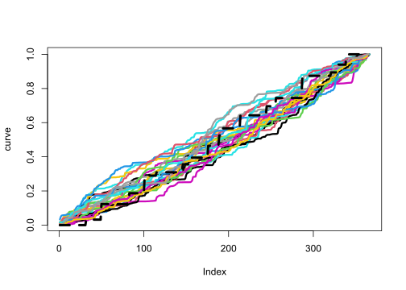
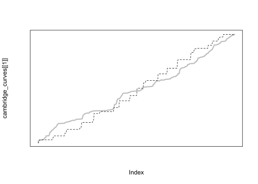
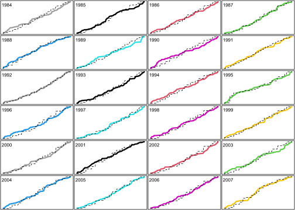
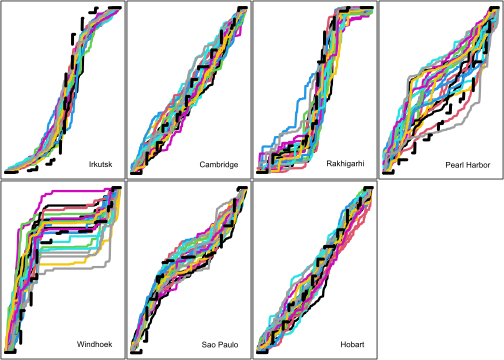
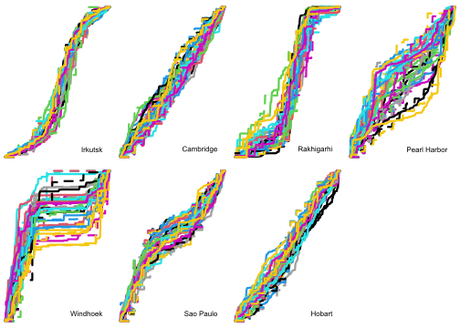
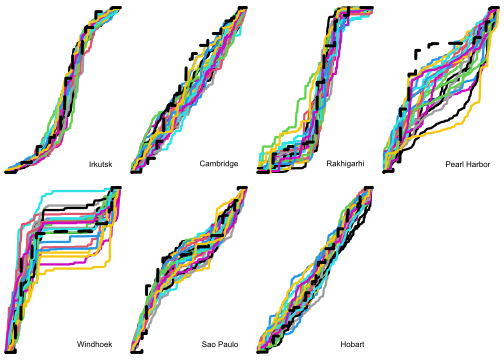
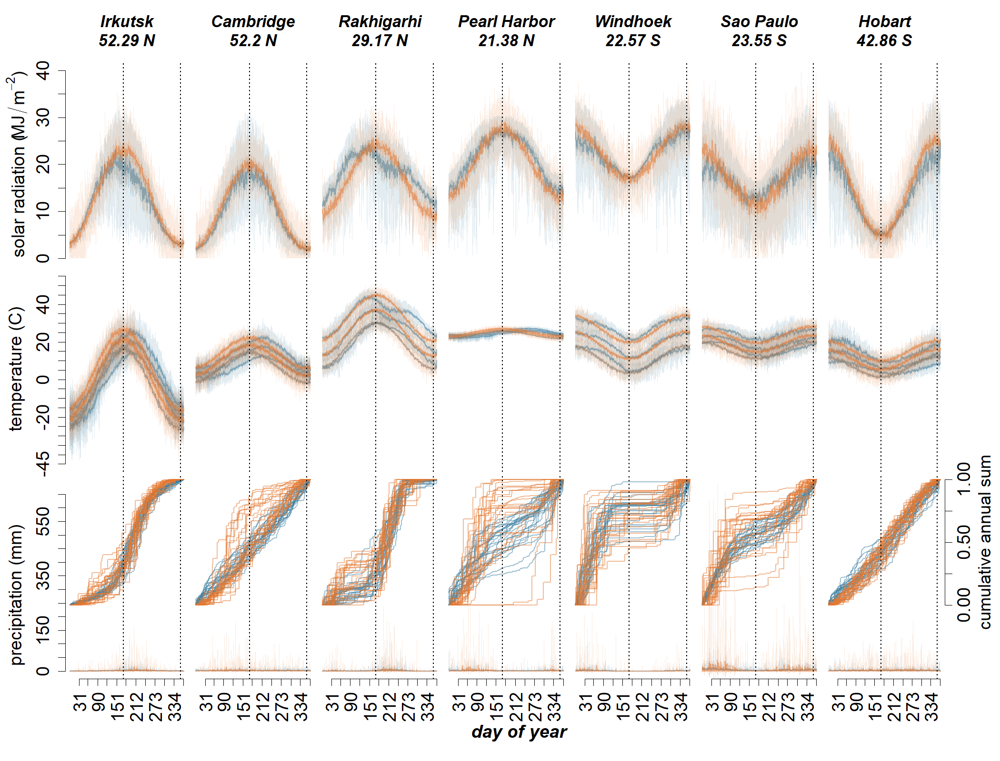

output_dir <- "output"
plot_file_format <- c("png", "eps")[1] # modify index number to change format7 Calibration targeting weather examples
7.1 Preparation
Choose file format for generated figures:
Load source file containing the R implementation of the Weather model:
source("source/weatherModel.R")
source("source/estimate_hyperparameters_optim.R")Set simulation constants:
SEED <- 0
YEAR_LENGTH <- 365 # ignoring leap year adjustment
SOLSTICE_SUMMER <- 172 # June 21st (approx.)
SOLSTICE_WINTER <- 355 # December 21st (approx.)As a final part in this demonstration, we will extend the above process to deal with multiple instances of curves and parameter sets, generated by the same configuration of hyperparameters. We will then want to estimate those original hyperparameter values.
We use the data downloaded at NASA´s POWER access viewer (power.larc.nasa.gov/data-access-viewer/) selecting the user community ‘Agroclimatology’ and pin pointing the different locations between 01/01/1984 and 31/12/2007. The exact locations are:
- Rakhigarhi, Haryana, India (Latitude: 29.1687, Longitude: 76.0687)
- Irkutsk, Irkutsk Óblast, Russia (Latitude: 52.2891, Longitude: 104.2493)
- Hobart, Tasmania, Australia (Latitude: -42.8649, Longitude: 147.3441)
- Pearl Harbor, Hawaii, United States of America (Latitude: 21.376, Longitude: -157.9708)
- São Paulo, Brazil (Latitude: -23.5513, Longitude: -46.6344)
- Cambridge, United Kingdom (Latitude: 52.2027, Longitude: 0.122)
- Windhoek, Namibia (Latitude: -22.5718, Longitude: 17.0953)
We selected the ICASA Format’s parameters:
- Precipitation (PRECTOT)
- Wind speed at 2m (WS2M)
- Relative Humidity at 2m (RH2M)
- Dew/frost point at 2m (T2MDEW)
- Maximum temperature at 2m (T2M_MAX)
- Minimum temperature at 2m (T2M_MIN)
- All sky insolation incident on a horizontal surface (ALLSKY_SFC_SW_DWN)
- Temperature at 2m (T2M)
and from Solar Related Parameters:
- Top-of-atmosphere Insolation (ALLSKY_TOA_SW_DWN)
# Function to read and filter weather data
read_weather_data <- function(file_path) {
data <- read.csv(file_path, skip = 18)
data[data$YEAR %in% 1984:2007, ]
}
# Get input file paths
input_files <- list.files(path = "input", full.names = TRUE)
# Read and combine all weather data
weather <- do.call(rbind, lapply(input_files, read_weather_data))
# Define site mapping
site_mapping <- list(
list(condition = function(x) floor(x$LAT) == 29, site = "Rakhigarhi"),
list(condition = function(x) floor(x$LON) == 104, site = "Irkutsk"),
list(condition = function(x) floor(x$LAT) == -43, site = "Hobart"),
list(condition = function(x) floor(x$LAT) == 21, site = "Pearl Harbor"),
list(condition = function(x) floor(x$LAT) == -24, site = "Sao Paulo"),
list(condition = function(x) floor(x$LON) == 0, site = "Cambridge"),
list(condition = function(x) floor(x$LAT) == -23, site = "Windhoek")
)
# Assign sites based on latitude and longitude
weather$Site <- NA
for (mapping in site_mapping) {
weather$Site[mapping$condition(weather)] <- mapping$site
}
# Calculate summary statistics
years <- unique(weather$YEAR)
number_of_years <- length(years)
# Calculate the yearly length in days
year_length_in_days <- as.integer(table(weather$YEAR) / nlevels(factor(weather$Site)))
year_length_max <- max(year_length_in_days)Prepare display order according to latitude:
# Create a function to format latitude
format_latitude <- function(lat) {
paste(abs(round(lat, 2)), ifelse(lat < 0, "S", "N"))
}
# Create and process sites_latitude data frame
sites_latitude <- data.frame(
Site = unique(weather$Site),
Latitude = as.numeric(unique(weather$LAT))
)
# Sort sites_latitude by descending latitude
sites_latitude <- sites_latitude[order(-sites_latitude$Latitude), ]
# Format latitude values
sites_latitude$Latitude <- sapply(sites_latitude$Latitude, format_latitude)
# calculate easy references to sites
sites <- sites_latitude$Site
number_of_sites <- length(sites)Compute statistics for each site and day of year:
# Define summary statistics function
calculate_summary <- function(data, column) {
c(mean = mean(data[[column]], na.rm = TRUE),
sd = sd(data[[column]], na.rm = TRUE),
max = max(data[[column]], na.rm = TRUE),
min = min(data[[column]], na.rm = TRUE),
error = qt(0.975, length(data[[column]]) - 1) *
sd(data[[column]], na.rm = TRUE) /
sqrt(length(data[[column]])))
}
# Initialize weather_summary as a data frame
weather_summary <- data.frame(
Site = character(),
dayOfYear = integer(),
solarRadiation.mean = numeric(),
solarRadiation.sd = numeric(),
solarRadiation.max = numeric(),
solarRadiation.min = numeric(),
solarRadiation.error = numeric(),
solarRadiationTop.mean = numeric(),
temperature.mean = numeric(),
temperature.sd = numeric(),
temperature.max = numeric(),
temperature.min = numeric(),
temperature.error = numeric(),
maxTemperature.mean = numeric(),
maxTemperature.max = numeric(),
maxTemperature.min = numeric(),
maxTemperature.error = numeric(),
minTemperature.mean = numeric(),
minTemperature.max = numeric(),
minTemperature.min = numeric(),
minTemperature.error = numeric(),
temperature.lowerDeviation = numeric(),
temperature.lowerDeviation.error = numeric(),
temperature.upperDeviation = numeric(),
temperature.upperDeviation.error = numeric(),
precipitation.mean = numeric(),
precipitation.max = numeric(),
precipitation.min = numeric(),
precipitation.error = numeric()
)
# Pre-allocate the weather_summary data frame
total_rows <- length(sites) * 366
weather_summary <- weather_summary[rep(1, total_rows), ]
# Main loop
row_index <- 1
for (site in sites) {
for (day in 1:366) {
weather_site_day <- weather[weather$Site == site & weather$DOY == day, ]
if (nrow(weather_site_day) == 0) next
weather_summary[row_index, "Site"] <- site
weather_summary[row_index, "dayOfYear"] <- day
# Solar radiation
solar_summary <- calculate_summary(weather_site_day, "ALLSKY_SFC_SW_DWN")
weather_summary[row_index, c("solarRadiation.mean", "solarRadiation.sd",
"solarRadiation.max", "solarRadiation.min",
"solarRadiation.error")] <- solar_summary
weather_summary[row_index, "solarRadiationTop.mean"] <- mean(weather_site_day$ALLSKY_TOA_SW_DWN, na.rm = TRUE)
# Temperature
temp_summary <- calculate_summary(weather_site_day, "T2M")
weather_summary[row_index, c("temperature.mean", "temperature.sd",
"temperature.max", "temperature.min",
"temperature.error")] <- temp_summary
# Max temperature
max_temp_summary <- calculate_summary(weather_site_day, "T2M_MAX")
weather_summary[row_index, c("maxTemperature.mean", "maxTemperature.max",
"maxTemperature.min", "maxTemperature.error")] <- max_temp_summary[c("mean", "max", "min", "error")]
# Min temperature
min_temp_summary <- calculate_summary(weather_site_day, "T2M_MIN")
weather_summary[row_index, c("minTemperature.mean", "minTemperature.max",
"minTemperature.min", "minTemperature.error")] <- min_temp_summary[c("mean", "max", "min", "error")]
# Temperature deviations
lower_dev <- weather_site_day$T2M - weather_site_day$T2M_MIN
upper_dev <- weather_site_day$T2M_MAX - weather_site_day$T2M
weather_summary[row_index, "temperature.lowerDeviation"] <- mean(lower_dev, na.rm = TRUE)
weather_summary[row_index, "temperature.lowerDeviation.error"] <- qt(0.975, length(lower_dev) - 1) *
sd(lower_dev, na.rm = TRUE) / sqrt(length(lower_dev))
weather_summary[row_index, "temperature.upperDeviation"] <- mean(upper_dev, na.rm = TRUE)
weather_summary[row_index, "temperature.upperDeviation.error"] <- qt(0.975, length(upper_dev) - 1) *
sd(upper_dev, na.rm = TRUE) / sqrt(length(upper_dev))
# Precipitation
precip_summary <- calculate_summary(weather_site_day, "PRECTOT")
weather_summary[row_index, c("precipitation.mean", "precipitation.max",
"precipitation.min", "precipitation.error")] <- precip_summary[c("mean", "max", "min", "error")]
row_index <- row_index + 1
}
}
# Remove any unused rows
weather_summary <- weather_summary[1:(row_index-1), ]7.2 Estimation of annual cumulative precipitation hyperparameters based on weather dataset
Declare auxiliary objects for estimating the precipitation cumulative curve with optim:
# Define the objective function for optimization
objective_function <- function(params, observed_data) {
predicted_data <- gen_cum_precipitation_of_year(
plateau_value = params[1],
inflection1 = params[2], rate1 = params[3],
inflection2 = params[4], rate2 = params[5],
year_length = length(observed_data),
n_samples = params[6],
max_sample_size = params[7],
seed = SEED
)
sum((observed_data - predicted_data)^2)
}7.2.1 Test an isolated version of the estimation of cumulative precipitation hyperparameters using optim
Prepare data for Cambridge site:
cambridge_data <- subset(weather, Site == "Cambridge")
cum_precip <- get_cumulative_precipitation(
daily_precipitation = cambridge_data$PRECTOT,
years = cambridge_data$YEAR
)
cambridge_curves <- split(cum_precip, cambridge_data$YEAR)Choose a good initial guess:
cambridge_initial_guess <- c(0.5, 122, 0.005, 243, 0.005, 180, 15)
cambridge_initial_guess_curve <- gen_cum_precipitation_of_year(
plateau_value = cambridge_initial_guess[1],
inflection1 = cambridge_initial_guess[2], rate1 = cambridge_initial_guess[3],
inflection2 = cambridge_initial_guess[4], rate2 = cambridge_initial_guess[5],
year_length = YEAR_LENGTH,
n_samples = cambridge_initial_guess[6],
max_sample_size = cambridge_initial_guess[7],
seed = SEED
)Visually assess initial guess:
plot(cambridge_curves[[1]], type = 'l', col = 1, lwd = 3, ylab = 'curve')
for (i in 2:length(cambridge_curves))
{
lines(cambridge_curves[[i]], col = i, lwd = 3)
}
lines(cambridge_initial_guess_curve, col = "black", lwd = 4, lty = 2)
Perform parameter estimation with best initial guess:
cambridge_estimation_result <- estimate_hyperparameters_optim(
curves = cambridge_curves,
objective_function = objective_function,
method = "L-BFGS-B",
lower = c(0, 1, 0.01, 1, 0.01, 1, 3),
upper = c(1, 365, 0.9, 365, 0.9, 365, 30),
initial_guess = cambridge_initial_guess
)Use parameter estimations to generate curves for each year:
cambridge_best_estimation_curves <- list()
for (year in years)
{
fit_year <- cambridge_estimation_result$curve_fits[[as.character(year)]]
cambridge_best_estimation_curve <- gen_cum_precipitation_of_year(
plateau_value = fit_year$par[1],
inflection1 = fit_year$par[2], rate1 = fit_year$par[3],
inflection2 = fit_year$par[4], rate2 = fit_year$par[5],
year_length = YEAR_LENGTH,
n_samples = fit_year$par[6],
max_sample_size = fit_year$par[7],
seed = SEED
)
cambridge_best_estimation_curves[[as.character(year)]] <- cambridge_best_estimation_curve
}Visualise fit for the first year:
plot(cambridge_curves[[1]], type = 'l', col = "grey", lwd = 3, xaxt = 'n', yaxt = 'n')
lines(cambridge_best_estimation_curves[[1]],
col = "black",
lty = 2)
Visualise fit per year:
layout(matrix(1:length(cambridge_curves), nrow = 6, ncol = 4, byrow = TRUE))
par(mar = c(0.1, 0.1, 0.1, 0.1))
for (year in years) {
plot(cambridge_curves[[as.character(year)]], type = 'l', col = as.character(year), lwd = 3, xaxt = 'n', yaxt = 'n')
lines(cambridge_best_estimation_curves[[as.character(year)]],
col = "black",#as.character(year),
lty = 2)
text(as.character(year), x = 20, y = 0.9)
}
7.2.2 Run estimation of cumulative precipitation hyperparameters for all sites
Prepare data for all sites:
cum_precip_per_site <- setNames(lapply(sites, function(site){
site_data <- subset(weather, Site == site)
cum_precip <- get_cumulative_precipitation(
daily_precipitation = site_data$PRECTOT,
years = site_data$YEAR
)
site_curves <- split(cum_precip, site_data$YEAR)
}), sites)Choose best initial guess per site:
initial_guesses <- setNames(lapply(sites, function(x) numeric(7)), sites)
initial_guesses[["Irkutsk"]] <- c(0.1, 60, 0.01, 200, 0.1, 180, 15)
initial_guesses[["Cambridge"]] <- c(0.5, 122, 0.005, 243, 0.005, 180, 15)
initial_guesses[["Rakhigarhi"]] <- c(0.2, 40, 0.1, 200, 0.1, 180, 15)
initial_guesses[["Pearl Harbor"]] <- c(0.8, 150, 0.005, 320, 0.1, 180, 15)
initial_guesses[["Windhoek"]] <- c(0.7, 80, 0.1, 330, 0.1, 180, 15)
initial_guesses[["Sao Paulo"]] <- c(0.6, 60, 0.1, 310, 0.1, 180, 15)
initial_guesses[["Hobart"]] <- c(0.5, 122, 0.005, 243, 0.005, 180, 15)
initial_guesses_curve <- lapply(initial_guesses, function(x) {
gen_cum_precipitation_of_year(
plateau_value = x[1],
inflection1 = x[2], rate1 = x[3],
inflection2 = x[4], rate2 = x[5],
year_length = YEAR_LENGTH,
n_samples = x[6],
max_sample_size = x[7],
seed = SEED
)
})Visually assess initial guess:
layout(matrix(1:(length(sites)+1), nrow = 2, ncol = 4, byrow = TRUE))
par(mar = c(0.1, 0.1, 0.1, 0.1))
for (site in sites) {
plot(cum_precip_per_site[[site]][[1]], type = 'l', col = 1, lwd = 3, xaxt = 'n', yaxt = 'n')
for (i in 2:length(cum_precip_per_site[[site]]))
{
lines(cum_precip_per_site[[site]][[i]], col = i, lwd = 3)
}
lines(initial_guesses_curve[[site]], col = "black", lwd = 4, lty = 2)
text(site, x = 340, y = 0.05, adj = 1)
}
plot(c(0, 1), c(0, 1), ann = FALSE, bty = 'n', type = 'n', xaxt = 'n', yaxt = 'n')
Perform parameter estimation for each site and year with best initial guess:
# Initialize an empty list to store results
estimation_results <- list()
# Iterate over all sites
for (site in sites)
{
site_data <- subset(weather, Site == site)
cum_precip <- get_cumulative_precipitation(
daily_precipitation = site_data$PRECTOT,
years = site_data$YEAR
)
curves <- split(cum_precip, site_data$YEAR)
estimation_results[[site]] <- estimate_hyperparameters_optim(
curves = curves,
objective_function = objective_function,
method = "L-BFGS-B",
lower = c(0, 1, 0.01, 1, 0.01, 1, 3),
upper = c(1, 365, 0.9, 365, 0.9, 365, 30),
initial_guess = initial_guesses[[site]]
)
}Use parameter estimations to generate curves for each site:
best_estimation_curves <- list()
for (site in sites)
{
for (year in years)
{
fit_year <- estimation_results[[site]]$curve_fits[[as.character(year)]]
best_estimation_curve <- gen_cum_precipitation_of_year(
plateau_value = fit_year$par[1],
inflection1 = fit_year$par[2], rate1 = fit_year$par[3],
inflection2 = fit_year$par[4], rate2 = fit_year$par[5],
year_length = YEAR_LENGTH,
n_samples = fit_year$par[6],
max_sample_size = fit_year$par[7],
seed = SEED
)
best_estimation_curves[[site]][[as.character(year)]] <- best_estimation_curve
}
}Visually assess fit of multiple years per site:
layout(matrix(1:(length(sites)+1), nrow = 2, ncol = 4, byrow = TRUE))
par(mar = c(0.1, 0.1, 0.1, 0.1))
for (site in sites) {
plot(c(0, max(year_length_in_days)), c(0, 1), ann = FALSE, bty = 'n', type = 'n', xaxt = 'n', yaxt = 'n')
for (year in years)
{
lines(cum_precip_per_site[[site]][[as.character(year)]], col = year, lwd = 3)
lines(best_estimation_curves[[site]][[as.character(year)]], col = year, lwd = 3, lty = 2)
}
text(site, x = 340, y = 0.05, adj = 1)
}
plot(c(0, 1), c(0, 1), ann = FALSE, bty = 'n', type = 'n', xaxt = 'n', yaxt = 'n')
Estimate a single parameter setting per site by averaging values per year:
best_estimation_fits_mean <- list()
for (site in sites)
{
parameters_per_year <- list()
for (year in years)
{
parameters_per_year[[as.character(year)]] <- estimation_results[[site]]$curve_fits[[as.character(year)]]$par
}
best_estimation_fits_mean[[site]]$mean <- apply(data.frame(parameters_per_year), 1, mean)
best_estimation_fits_mean[[site]]$sd <- apply(data.frame(parameters_per_year), 1, sd)
}Use mean parameter estimations to generate curves for each site:
best_estimation_curves_mean <- list()
for (site in sites)
{
fit_site <- best_estimation_fits_mean[[site]]$mean
best_estimation_curve_mean <- gen_cum_precipitation_of_year(
plateau_value = fit_site[1],
inflection1 = fit_site[2], rate1 = fit_site[3],
inflection2 = fit_site[4], rate2 = fit_site[5],
year_length = YEAR_LENGTH,
n_samples = fit_site[6],
max_sample_size = fit_site[7],
seed = SEED
)
best_estimation_curves_mean[[site]] <- best_estimation_curve_mean
}Visually assess fit of the single estimation per site:
layout(matrix(1:(length(sites)+1), nrow = 2, ncol = 4, byrow = TRUE))
par(mar = c(0.1, 0.1, 0.1, 0.1))
for (site in sites) {
plot(c(0, max(year_length_in_days)), c(0, 1), ann = FALSE, bty = 'n', type = 'n', xaxt = 'n', yaxt = 'n')
for (year in years)
{
lines(cum_precip_per_site[[site]][[as.character(year)]], col = year, lwd = 3)
}
lines(best_estimation_curves_mean[[site]], col = "black", lwd = 4, lty = 2)
text(site, x = 340, y = 0.05, adj = 1)
}
plot(c(0, 1), c(0, 1), ann = FALSE, bty = 'n', type = 'n', xaxt = 'n', yaxt = 'n')
best_estimation_fits_mean_table <- list()
for (site in sites)
{
best_estimation_fits_mean_table[[site]] <- paste0(
round(best_estimation_fits_mean[[site]]$mean, digits = 4),
" (±", round(best_estimation_fits_mean[[site]]$sd, digits = 4), ")")
}
best_estimation_fits_mean_table <- as.data.frame(best_estimation_fits_mean_table,
row.names = c("plateau value", "inflection1", "rate1", "inflection2", "rate2", "n_samples", "max_sample_size"))
knitr::kable(best_estimation_fits_mean_table)| Irkutsk | Cambridge | Rakhigarhi | Pearl.Harbor | Windhoek | Sao.Paulo | Hobart | |
|---|---|---|---|---|---|---|---|
| plateau value | 0.0935 (±0.1015) | 0.3902 (±0.2624) | 0.2267 (±0.1762) | 0.783 (±0.19) | 0.814 (±0.1738) | 0.5705 (±0.1077) | 0.3987 (±0.281) |
| inflection1 | 60.909 (±4.4393) | 116.5566 (±24.6686) | 34.8833 (±11.7029) | 69.9943 (±69.6337) | 27.9262 (±26.9712) | 43.2431 (±23.0397) | 122.0008 (±0.0077) |
| rate1 | 0.1268 (±0.2551) | 0.0474 (±0.1816) | 0.5323 (±0.3584) | 0.1046 (±0.2554) | 0.3787 (±0.3929) | 0.3253 (±0.3593) | 0.01 (±0) |
| inflection2 | 204.3544 (±9.2733) | 262.4333 (±44.5082) | 210.5208 (±11.3796) | 325.012 (±12.8186) | 333.2413 (±11.3875) | 319.3132 (±14.9556) | 253.1712 (±34.4429) |
| rate2 | 0.0352 (±0.0279) | 0.01 (±0) | 0.3347 (±0.4006) | 0.3834 (±0.4011) | 0.4163 (±0.3817) | 0.0292 (±0.0095) | 0.0106 (±0.0012) |
| n_samples | 178.7062 (±3.5977) | 181.7599 (±1.9596) | 178.646 (±10.3818) | 179.9609 (±9.3249) | 176.6509 (±19.3775) | 182.5667 (±3.5898) | 181.4085 (±4.7813) |
| max_sample_size | 15.0996 (±3.9922) | 13.0235 (±2.2968) | 17.2914 (±4.5612) | 13.2541 (±6.3016) | 17.0167 (±5.7825) | 16.5374 (±1.8574) | 13.6198 (±2.5149) |
This approach seems not to work well on rate1 and rate2 standard deviations, which are estimated too high within the relative scale of a logistic rate. For example, Windhoek gets 0.3787 (±0.3929), according to which a normal probability distribution would cover most of the 0-1 range. A similar problem occurs with the Pearl Harbor’s and Windhoek’s inflection1 standard deviation.
Since the purpose is to test the potential fit of the Weather model, not the optimisation approach, we proceed to divide by a third all instances of standard deviations.
sd_adjustment <- 0.3
for (site in sites)
{
best_estimation_fits_mean[[site]]$sd[3] <- best_estimation_fits_mean[[site]]$sd[3] * sd_adjustment
best_estimation_fits_mean[[site]]$sd[5] <- best_estimation_fits_mean[[site]]$sd[5] * sd_adjustment
}
best_estimation_fits_mean[["Pearl Harbor"]]$sd[2] <- best_estimation_fits_mean[["Pearl Harbor"]]$sd[2] * sd_adjustment
best_estimation_fits_mean[["Windhoek"]]$sd[2] <- best_estimation_fits_mean[["Windhoek"]]$sd[2] * sd_adjustmentbest_estimation_fits_mean_table <- list()
for (site in sites)
{
best_estimation_fits_mean_table[[site]] <- paste0(
round(best_estimation_fits_mean[[site]]$mean, digits = 4),
" (±", round(best_estimation_fits_mean[[site]]$sd, digits = 4), ")")
}
best_estimation_fits_mean_table <- as.data.frame(best_estimation_fits_mean_table,
row.names = c("plateau value", "inflection1", "rate1", "inflection2", "rate2", "n_samples", "max_sample_size"))
knitr::kable(best_estimation_fits_mean_table)| Irkutsk | Cambridge | Rakhigarhi | Pearl.Harbor | Windhoek | Sao.Paulo | Hobart | |
|---|---|---|---|---|---|---|---|
| plateau value | 0.0935 (±0.1015) | 0.3902 (±0.2624) | 0.2267 (±0.1762) | 0.783 (±0.19) | 0.814 (±0.1738) | 0.5705 (±0.1077) | 0.3987 (±0.281) |
| inflection1 | 60.909 (±4.4393) | 116.5566 (±24.6686) | 34.8833 (±11.7029) | 69.9943 (±20.8901) | 27.9262 (±8.0914) | 43.2431 (±23.0397) | 122.0008 (±0.0077) |
| rate1 | 0.1268 (±0.0765) | 0.0474 (±0.0545) | 0.5323 (±0.1075) | 0.1046 (±0.0766) | 0.3787 (±0.1179) | 0.3253 (±0.1078) | 0.01 (±0) |
| inflection2 | 204.3544 (±9.2733) | 262.4333 (±44.5082) | 210.5208 (±11.3796) | 325.012 (±12.8186) | 333.2413 (±11.3875) | 319.3132 (±14.9556) | 253.1712 (±34.4429) |
| rate2 | 0.0352 (±0.0084) | 0.01 (±0) | 0.3347 (±0.1202) | 0.3834 (±0.1203) | 0.4163 (±0.1145) | 0.0292 (±0.0028) | 0.0106 (±4e-04) |
| n_samples | 178.7062 (±3.5977) | 181.7599 (±1.9596) | 178.646 (±10.3818) | 179.9609 (±9.3249) | 176.6509 (±19.3775) | 182.5667 (±3.5898) | 181.4085 (±4.7813) |
| max_sample_size | 15.0996 (±3.9922) | 13.0235 (±2.2968) | 17.2914 (±4.5612) | 13.2541 (±6.3016) | 17.0167 (±5.7825) | 16.5374 (±1.8574) | 13.6198 (±2.5149) |
7.3 Running the entire Weather model using all estimated parameters
Calculate yearly summary statistics matching parameter inputs for each example location:
# Define summary function for a single site
calculate_site_summary <- function(site_data) {
# Daily aggregated statistics
daily_temp_mean <- aggregate(site_data$T2M, by = list(site_data$DOY), FUN = mean)
daily_temp_sd <- aggregate(site_data$T2M, by = list(site_data$DOY), FUN = sd)
daily_solar_mean <- aggregate(site_data$ALLSKY_SFC_SW_DWN, by = list(site_data$DOY), FUN = mean)
daily_solar_sd <- aggregate(site_data$ALLSKY_SFC_SW_DWN, by = list(site_data$DOY), FUN = sd)
# Yearly precipitation aggregation
annual_sum <- aggregate(site_data$PRECTOT, by = list(site_data$YEAR), FUN = sum)
# Return computed values as a named list
list(
temp_annual_max = max(daily_temp_mean$x, na.rm = TRUE),
temp_annual_min = min(daily_temp_mean$x, na.rm = TRUE),
temp_daily_fluctuation = mean(daily_temp_sd$x, na.rm = TRUE),
temp_daily_lower_dev = mean(site_data$T2M - site_data$T2M_MIN, na.rm = TRUE),
temp_daily_upper_dev = mean(site_data$T2M_MAX - site_data$T2M, na.rm = TRUE),
solar_annual_max = max(daily_solar_mean$x, na.rm = TRUE),
solar_annual_min = min(daily_solar_mean$x, na.rm = TRUE),
solar_daily_fluctuation = mean(daily_solar_sd$x, na.rm = TRUE),
precip_annual_sum_mean = mean(annual_sum$x, na.rm = TRUE),
precip_annual_sum_sd = sd(annual_sum$x, na.rm = TRUE)
)
}
# Apply the function across sites
annual_weather_summary <- lapply(split(weather, weather$Site), calculate_site_summary)
# Convert the list of summaries into a data frame
annual_weather_summary_df <- do.call(rbind, annual_weather_summary)
#annual_weather_summary_df <- cbind(Site = names(annual_weather_summary), annual_weather_summary_df)
# Ensure the data frame structure is consistent
annual_weather_summary_df <- as.data.frame(annual_weather_summary_df)
#rownames(annual_weather_summary_df) <- NULLInitialise experiments per site using annual summary statistics and estimated yearly cumulative precipitation parameters of example locations as parameter inputs:
weather_model_runs <- list()
for (site in sites)
{
estimation_optim <- best_estimation_fits_mean[[site]]
weather_model_runs[[site]] <- initialise_weather_model(
year_length = year_length_in_days,
seed = SEED,
albedo = 0.4,
is_southern_hemisphere = weather[weather$Site == site,"LAT"][1] < 0,
temp_annual_max = annual_weather_summary_df$temp_annual_max[[site]],
temp_annual_min = annual_weather_summary_df$temp_annual_min[[site]],
temp_daily_fluctuation = annual_weather_summary_df$temp_daily_fluctuation[[site]],
temp_daily_lower_dev = annual_weather_summary_df$temp_daily_lower_dev[[site]],
temp_daily_upper_dev = annual_weather_summary_df$temp_daily_upper_dev[[site]],
solar_annual_max = annual_weather_summary_df$solar_annual_max[[site]],
solar_annual_min = annual_weather_summary_df$solar_annual_min[[site]],
solar_daily_fluctuation = annual_weather_summary_df$solar_daily_fluctuation[[site]],
precip_annual_sum_mean = annual_weather_summary_df$precip_annual_sum_mean[[site]],
precip_annual_sum_sd = annual_weather_summary_df$precip_annual_sum_sd[[site]],
precip_plateau_value_mean = estimation_optim$mean[1],
precip_plateau_value_sd = estimation_optim$sd[1],
precip_inflection1_mean = estimation_optim$mean[2],
precip_inflection1_sd = estimation_optim$sd[2],
precip_rate1_mean = estimation_optim$mean[3],
precip_rate1_sd = estimation_optim$sd[3],
precip_inflection2_mean = estimation_optim$mean[4],
precip_inflection2_sd = estimation_optim$sd[4],
precip_rate2_mean = estimation_optim$mean[5],
precip_rate2_sd = estimation_optim$sd[5],
precip_n_samples_mean = estimation_optim$mean[6],
precip_n_samples_sd = estimation_optim$sd[6],
precip_max_sample_size_mean = estimation_optim$mean[7],
precip_max_sample_size_sd = estimation_optim$sd[7]
)
}Run experiments:
for (site in sites)
{
weather_model_runs[[site]] <-
run_weather_model(weather_model_runs[[site]], number_of_years)
}Create a data frame containing the daily summary statistics of simulations comparable to the one for the real data:
# Function to calculate summary statistics for a single day's data
calculate_daily_summary <- function(day_data) {
# Solar radiation
solar_mean <- mean(day_data$solar_radiation, na.rm = TRUE)
solar_sd <- sd(day_data$solar_radiation, na.rm = TRUE)
solar_max <- max(day_data$solar_radiation, na.rm = TRUE)
solar_min <- min(day_data$solar_radiation, na.rm = TRUE)
solar_error <- qt(0.975, df = max(length(day_data$solar_radiation) - 1, 1)) *
solar_sd / sqrt(length(day_data$solar_radiation))
# Temperature
temp_mean <- mean(day_data$temperature, na.rm = TRUE)
temp_sd <- sd(day_data$temperature, na.rm = TRUE)
temp_max <- max(day_data$temperature, na.rm = TRUE)
temp_min <- min(day_data$temperature, na.rm = TRUE)
temp_error <- qt(0.975, df = max(length(day_data$temperature) - 1, 1)) *
temp_sd / sqrt(length(day_data$temperature))
# Max temperature
max_temp_mean <- mean(day_data$temperature_max, na.rm = TRUE)
max_temp_max <- max(day_data$temperature_max, na.rm = TRUE)
max_temp_min <- min(day_data$temperature_max, na.rm = TRUE)
max_temp_error <- qt(0.975, df = max(length(day_data$temperature_max) - 1, 1)) *
sd(day_data$temperature_max, na.rm = TRUE) /
sqrt(length(day_data$temperature_max))
# Min temperature
min_temp_mean <- mean(day_data$temperature_min, na.rm = TRUE)
min_temp_max <- max(day_data$temperature_min, na.rm = TRUE)
min_temp_min <- min(day_data$temperature_min, na.rm = TRUE)
min_temp_error <- qt(0.975, df = max(length(day_data$temperature_min) - 1, 1)) *
sd(day_data$temperature_min, na.rm = TRUE) /
sqrt(length(day_data$temperature_min))
# Deviations
lower_dev <- mean(day_data$temperature - day_data$temperature_min, na.rm = TRUE)
lower_dev_error <- qt(0.975, df = max(length(day_data$temperature_min) - 1, 1)) *
sd(day_data$temperature - day_data$temperature_min, na.rm = TRUE) /
sqrt(length(day_data$temperature_min))
upper_dev <- mean(day_data$temperature_max - day_data$temperature, na.rm = TRUE)
upper_dev_error <- qt(0.975, df = max(length(day_data$temperature_max) - 1, 1)) *
sd(day_data$temperature_max - day_data$temperature, na.rm = TRUE) /
sqrt(length(day_data$temperature_max))
# Precipitation
precip_mean <- mean(day_data$precipitation, na.rm = TRUE)
precip_max <- max(day_data$precipitation, na.rm = TRUE)
precip_min <- min(day_data$precipitation, na.rm = TRUE)
precip_error <- qt(0.975, df = max(length(day_data$precipitation) - 1, 1)) *
sd(day_data$precipitation, na.rm = TRUE) /
sqrt(length(day_data$precipitation))
# Combine results into a named list
list(
solarRadiation.mean = solar_mean,
solarRadiation.sd = solar_sd,
solarRadiation.max = solar_max,
solarRadiation.min = solar_min,
solarRadiation.error = solar_error,
temperature.mean = temp_mean,
temperature.sd = temp_sd,
temperature.max = temp_max,
temperature.min = temp_min,
temperature.error = temp_error,
maxTemperature.mean = max_temp_mean,
maxTemperature.max = max_temp_max,
maxTemperature.min = max_temp_min,
maxTemperature.error = max_temp_error,
minTemperature.mean = min_temp_mean,
minTemperature.max = min_temp_max,
minTemperature.min = min_temp_min,
minTemperature.error = min_temp_error,
temperature.lowerDeviation = lower_dev,
temperature.lowerDeviation.error = lower_dev_error,
temperature.upperDeviation = upper_dev,
temperature.upperDeviation.error = upper_dev_error,
precipitation.mean = precip_mean,
precipitation.max = precip_max,
precipitation.min = precip_min,
precipitation.error = precip_error
)
}
# Process data for all sites and days
weather_summary_sim <- do.call(rbind, lapply(sites, function(site) {
site_data <- as.data.frame(weather_model_runs[[site]]$daily)
do.call(rbind, lapply(1:max(year_length_in_days), function(day) {
day_data <- site_data[site_data$current_day_of_year == day,]
as.data.frame(list(
Site = site,
day_of_year = day,
calculate_daily_summary(day_data)
))
}))
}))
# Convert to a data frame
weather_summary_sim <- as.data.frame(weather_summary_sim)7.4 Creating figure
Set colours for real and simulated data:
realDataColour = hsv(200/360, 62/100, 63/100) # teal
simulatedDataColour = hsv(24/360, 79/100, 89/100) # orangeCreate figure:
# Helper functions
round_to_multiple <- function(x, base, round_fn = round) {
round_fn(x / base) * base
}
create_polygon <- function(x, y1, y2, alpha = 0.5, col = "black") {
polygon(c(x, rev(x)), c(y1, rev(y2)), col = adjustcolor(col, alpha = alpha), border = NA)
}
plot_weather_variable <- function(x, y, ylim, lwd, col = "black", lty = 1) {
plot(x, y, axes = FALSE, ylim = ylim, type = "l", lwd = lwd, col = col, lty = lty)
}
add_confidence_interval <- function(x, y_mean, error, col, alpha = 0.5) {
create_polygon(x, y_mean + error, y_mean, alpha, col)
create_polygon(x, y_mean - error, y_mean, alpha, col)
}
add_min_max_interval <- function(x, y_mean, y_min, y_max, col, alpha = 0.3) {
create_polygon(x, y_max, y_mean, alpha, col)
create_polygon(x, y_min, y_mean, alpha, col)
}
# Main plotting function
plot_weather_summary_comparison <- function(weather_summary, sites, sites_latitude, weather) {
# Setup plot
num_columns <- length(sites) + 1
num_rows_except_bottom <- 4
layout_matrix <- rbind(
matrix(1:(num_columns * num_rows_except_bottom), nrow = num_rows_except_bottom, ncol = num_columns, byrow = FALSE),
c((num_columns * num_rows_except_bottom) + 1, rep((num_columns * num_rows_except_bottom) + 2, length(sites)))
)
layout(layout_matrix,
widths = c(3, 12, rep(10, length(sites) - 2), 14),
heights = c(3, 10, 10, 12, 2))
# Y-axis labels
y_labs <- c(expression(paste("solar radiation (", MJ/m^-2, ")")),
"temperature (C)", "precipitation (mm)")
# Calculate ranges
range_solar <- c(
round_to_multiple(min(
min(weather_summary$solarRadiation.min),
min(weather_summary_sim$solarRadiation.min)),
5, floor),
round_to_multiple(max(
max(weather_summary$solarRadiation.max),
40),
#max(weather_summary_sim$solarRadiation.max)),
## an outlier in Sao Paulo brings it to c. 46 and does not show with the polygon
5, ceiling)
)
range_temp <- c(
round_to_multiple(min(
min(weather_summary$minTemperature.min),
min(weather_summary_sim$minTemperature.min)),
5, floor),
round_to_multiple(max(
max(weather_summary$maxTemperature.max),
max(weather_summary_sim$maxTemperature.max)),
5, ceiling)
)
range_precip <- c(
round_to_multiple(min(
min(weather_summary$precipitation.min),
min(weather_summary_sim$precipitation.min)),
5, floor),
round_to_multiple(max(
max(weather_summary$precipitation.max),
max(weather_summary_sim$precipitation.max)),
5, ceiling)
)
# Plot settings
par(cex = graphic_scale, cex.axis = graphic_scale * (0.8 + axis_text_rescale))
# First column: y axis titles
for (i in 1:4) {
par(mar = c(0, 0, 0, 0.4))
plot(c(0, 1), c(0, 1), ann = FALSE, bty = 'n', type = 'n', xaxt = 'n', yaxt = 'n')
if (i > 1) {
text(x = 0.5, y = 0.5, font = 4,
cex = graphic_scale * (0.78 + font_rescale),
srt = 90,
labels = y_labs[i-1])
}
}
# Plot for each site
for (site in sites) {
weather_site <- weather[weather$Site == site,]
weather_model_site <- weather_model_runs[[site]]$daily
weather_summary_site <- weather_summary[weather_summary$Site == site,]
weather_summary_site_sim <- weather_summary_sim[weather_summary_sim$Site == site,]
left_plot_margin <- ifelse(site == sites[1], 2, 0.1)
right_plot_margin <- ifelse(site == sites[length(sites)], 4, 0.1)
# Site name + latitude
par(mar = c(0.2, left_plot_margin, 0.1, right_plot_margin))
plot(c(0, 1), c(0, 1), ann = FALSE, bty = 'n', type = 'n', xaxt = 'n', yaxt = 'n')
text(x = 0.5, y = 0.5, font = 4,
cex = graphic_scale * (0.7 + font_rescale),
labels = paste(site, sites_latitude$Latitude[sites_latitude$Site == site], sep = "\n"))
# Solar radiation
# original data
par(mar = c(0.1, left_plot_margin, 0.1, right_plot_margin))
plot_weather_variable(1:year_length_max, weather_summary_site$solarRadiation.mean,
range_solar, graphic_scale,
col = adjustcolor(realDataColour, alpha.f = 1))
add_confidence_interval(1:year_length_max, weather_summary_site$solarRadiation.mean,
weather_summary_site$solarRadiation.error,
adjustcolor(realDataColour, alpha.f = 0.75))
add_min_max_interval(1:year_length_max,
weather_summary_site$solarRadiation.mean,
weather_summary_site$solarRadiation.min,
weather_summary_site$solarRadiation.max,
adjustcolor(realDataColour, alpha.f = 0.5))
# simulations
lines(1:year_length_max, weather_summary_site_sim$solarRadiation.mean,
lwd = graphic_scale,
col = adjustcolor(simulatedDataColour, alpha.f = 1))
add_confidence_interval(1:year_length_max,
weather_summary_site_sim$solarRadiation.mean,
weather_summary_site_sim$solarRadiation.error,
adjustcolor(simulatedDataColour, alpha.f = 0.75))
add_min_max_interval(1:year_length_max,
weather_summary_site_sim$solarRadiation.mean,
weather_summary_site_sim$solarRadiation.min,
weather_summary_site_sim$solarRadiation.max,
adjustcolor(simulatedDataColour, alpha.f = 0.5))
# solstices and axes
#lines(1:year_length_max, weather_summary_site$solarRadiationTop.mean, lty = 2, lwd = graphic_scale)
abline(v = c(SOLSTICE_SUMMER, SOLSTICE_WINTER), lty = 3, lwd = graphic_scale)
if (site == sites[1]) {
axis(2, at = seq(range_solar[1], range_solar[2], 5))
}
# Temperature
# original data
plot_weather_variable(1:year_length_max, weather_summary_site$temperature.mean,
range_temp, graphic_scale,
col = adjustcolor(realDataColour, alpha.f = 1))
add_confidence_interval(1:year_length_max,
weather_summary_site$temperature.mean,
weather_summary_site$temperature.error,
adjustcolor(realDataColour, alpha.f = 0.75))
add_min_max_interval(1:year_length_max,
weather_summary_site$temperature.mean,
weather_summary_site$temperature.min,
weather_summary_site$temperature.max,
adjustcolor(realDataColour, alpha.f = 0.5))
lines(1:year_length_max, weather_summary_site$maxTemperature.mean,
lwd = graphic_scale,
col = adjustcolor(realDataColour, alpha.f = 1))
add_confidence_interval(1:year_length_max,
weather_summary_site$maxTemperature.mean,
weather_summary_site$maxTemperature.error,
col = adjustcolor(realDataColour, alpha.f = 0.75))
add_min_max_interval(1:year_length_max,
weather_summary_site$maxTemperature.mean,
weather_summary_site$maxTemperature.min,
weather_summary_site$maxTemperature.max,
adjustcolor(realDataColour, alpha.f = 0.5))
lines(1:year_length_max, weather_summary_site$minTemperature.mean,
lwd = graphic_scale,
col = adjustcolor(realDataColour, alpha.f = 1))
add_confidence_interval(1:year_length_max,
weather_summary_site$minTemperature.mean,
weather_summary_site$minTemperature.error,
adjustcolor(realDataColour, alpha.f = 0.75))
add_min_max_interval(1:year_length_max,
weather_summary_site$minTemperature.mean,
weather_summary_site$minTemperature.min,
weather_summary_site$minTemperature.max,
adjustcolor(realDataColour, alpha.f = 0.5))
# simulations
lines(1:year_length_max, weather_summary_site_sim$temperature.mean,
lwd = graphic_scale,
col = adjustcolor(simulatedDataColour, alpha.f = 1))
add_confidence_interval(1:year_length_max,
weather_summary_site_sim$temperature.mean,
weather_summary_site_sim$temperature.error,
adjustcolor(simulatedDataColour, alpha.f = 0.75))
add_min_max_interval(1:year_length_max,
weather_summary_site_sim$temperature.mean,
weather_summary_site_sim$temperature.min,
weather_summary_site_sim$temperature.max,
adjustcolor(simulatedDataColour, alpha.f = 0.5))
lines(1:year_length_max, weather_summary_site_sim$maxTemperature.mean,
lwd = graphic_scale,
col = adjustcolor(simulatedDataColour, alpha.f = 1))
add_confidence_interval(1:year_length_max,
weather_summary_site_sim$maxTemperature.mean,
weather_summary_site_sim$maxTemperature.error,
col = adjustcolor(simulatedDataColour, alpha.f = 0.75))
add_min_max_interval(1:year_length_max,
weather_summary_site_sim$maxTemperature.mean,
weather_summary_site_sim$maxTemperature.min,
weather_summary_site_sim$maxTemperature.max,
adjustcolor(simulatedDataColour, alpha.f = 0.5))
lines(1:year_length_max, weather_summary_site_sim$minTemperature.mean,
lwd = graphic_scale,
col = adjustcolor(simulatedDataColour, alpha.f = 1))
add_confidence_interval(1:year_length_max,
weather_summary_site_sim$minTemperature.mean,
weather_summary_site_sim$minTemperature.error,
adjustcolor(simulatedDataColour, alpha.f = 0.75))
add_min_max_interval(1:year_length_max,
weather_summary_site_sim$minTemperature.mean,
weather_summary_site_sim$minTemperature.min,
weather_summary_site_sim$minTemperature.max,
adjustcolor(simulatedDataColour, alpha.f = 0.5))
# solstices and axes
abline(v = c(SOLSTICE_SUMMER, SOLSTICE_WINTER), lty = 3, lwd = graphic_scale)
if (site == sites[1]) {
axis(2, at = seq(range_temp[1], range_temp[2], 5))
}
# Precipitation
par(mar = c(8, left_plot_margin, 0.1, right_plot_margin))
# cumulative precipitation
plot(c(1, year_length_max), c(0, 1), ann = FALSE, bty = 'n', type = 'n', xaxt = 'n', yaxt = 'n')
# original data
for (year in years) {
site_year_data <- weather_site$PRECTOT[weather_site$YEAR == year]
lines(1:length(site_year_data),
get_cumulative_precipitation_of_year(site_year_data),
lwd = graphic_scale,
col = adjustcolor(realDataColour, alpha.f = 0.5))
}
# simulation
for (year in 1:number_of_years) {
site_year_data_sim <- weather_model_site$precipitation[weather_model_site$current_year == year]
lines(1:length(site_year_data_sim),
get_cumulative_precipitation_of_year(site_year_data_sim),
lwd = graphic_scale,
col = adjustcolor(simulatedDataColour, alpha.f = 0.5))
}
if (site == sites[length(sites)]) {
axis(4, at = seq(0, 1, 0.25))
mtext("cumulative annual sum", 4, line = 2.5, cex = graphic_scale * (1.5 + margin_text_rescale))
}
# daily precipitation
par(new = TRUE, mar = c(3, left_plot_margin, 0.1, right_plot_margin))
# original data
plot_weather_variable(1:year_length_max,
weather_summary_site$precipitation.mean,
range_precip,
graphic_scale,
col = adjustcolor(realDataColour, alpha.f = 0.5))
add_confidence_interval(1:year_length_max,
weather_summary_site$precipitation.mean,
weather_summary_site$precipitation.error,
adjustcolor(realDataColour, alpha.f = 0.5))
add_min_max_interval(1:year_length_max,
weather_summary_site$precipitation.mean,
weather_summary_site$precipitation.min,
weather_summary_site$precipitation.max,
adjustcolor(realDataColour, alpha.f = 0.5))
# simulation
lines(1:year_length_max,
weather_summary_site_sim$precipitation.mean,
lwd = graphic_scale,
col = adjustcolor(simulatedDataColour, alpha.f = 0.5))
add_confidence_interval(1:year_length_max,
weather_summary_site_sim$precipitation.mean,
weather_summary_site_sim$precipitation.error,
adjustcolor(simulatedDataColour, alpha.f = 0.5))
add_min_max_interval(1:year_length_max,
weather_summary_site_sim$precipitation.mean,
weather_summary_site_sim$precipitation.min,
weather_summary_site_sim$precipitation.max,
adjustcolor(simulatedDataColour, alpha.f = 0.5))
# solstices and axes
abline(v = c(SOLSTICE_SUMMER, SOLSTICE_WINTER), lty = 3, lwd = graphic_scale)
if (site == sites[1]) {
axis(2, at = seq(range_precip[1], range_precip[2], 50))
}
axis(1, at = cumsum(c(31, 28, 31, 30, 31, 30, 31, 31, 30, 31, 30, 31)), las = 2)
}
# Bottom row: "day of year" label
par(mar = c(0, 0, 0, 0))
plot(c(0, 1), c(0, 1), ann = FALSE, bty = 'n', type = 'n', xaxt = 'n', yaxt = 'n')
plot(c(0, 1), c(0, 1), ann = FALSE, bty = 'n', type = 'n', xaxt = 'n', yaxt = 'n')
text(x = 0.5, y = 0.7, font = 4,
cex = graphic_scale * (0.8 + font_rescale),
labels = "day of year")
}
# Main execution
plot_name <- file.path(output_dir, paste0("Fig6-ValidationUsingExamples.", plot_file_format))
if (plot_file_format == "png") {
graphic_scale <- 2
font_rescale <- axis_text_rescale <- margin_text_rescale <- 0
png(plot_name, width = number_of_sites * graphic_scale * 150, height = graphic_scale * 800)
} else if (plot_file_format == "eps") {
graphic_scale = 1.2
font_rescale = 0.1
axis_text_rescale = -0.1
margin_text_rescale = -0.5
extrafont::loadfonts(device = "postscript")
grDevices::cairo_ps(filename = plot_name ,
pointsize = 12,
width = number_of_sites * graphic_scale * 1.5,
height = graphic_scale * 8,
onefile = FALSE,
family = "sans"
)
}
plot_weather_summary_comparison(weather_summary, sites, sites_latitude, weather)
dev.off()svg
2 knitr::include_graphics(plot_name)